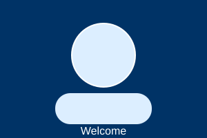

Welcome! This site is an online version of my resume. My name is Michael Blythe. I am a Computer Science student at Austin Peay State University (Software Engineering concentration, graduating August 2026), a U.S. Army veteran, and a former Oracle Cloud Infrastructure software engineering intern. Use the links below to learn more about my current technical skills, the new skills I plan to learn, and the kind of job I am looking for.